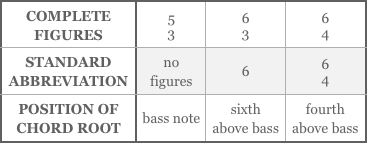

-
Chapter 7
Triads
Now that you understand consonance and dissonance and how to classify intervals, it’s possible to discuss harmony – the art of combining simultaneous pitches.
We’ll use the term chord to refer to a combination of three or more different pitch classes, and keep the term interval for combinations of only two pitch classes.Autograph page of J.S. Bach’s Prelude in C from the
Well Tempered Clavier, Book I
Bach’s famous keyboard composition consists entirely of chords played melodically (“arpeggiated”). -
95
Section 1
Types of Triads
The kind of harmony we are studying, the harmony that underlies both music of the classical era and popular music of today, is called tonal harmony. It is based on the triad Triad A three note chord built by stacking two thirds together: F- A- C, for example. The outer notes of a triad
are a fifth apart. A triad can be major, minor, augmented or diminished depending on the qualities of its thirds. . A triad is a chord formed by combining the intervals of the fifth and the third; in its simplest form it looks like two thirds stacked together, as at right.Triads arise naturally whenever you try to make three different pitches agree with each other. It’s a unique structure: a major or minor triad is the only possible group of three pitches in which all are different
pitch classes and all are consonant with each of the others. That is why the triad has come to have
such importance in tonal harmony, which depends on the resolution of dissonance by consonance:
consonant triads provide that resolution.Figure 7.1
Triad built on CFigure 7.3 Parts of the triad
major triad
minor triad
Figure 7.2 Major and minor triads are composed of a major third and a minor
third, which add up to a perfect fifth.The Major And Minor Triads
Consonant triads are composed of a major third and a minor third, which add up to a perfect fifth. If the major third is the lower of the two, the triad is called a major triad Major Triad A chord formed of a major third with a minor third on top. The outer notes of the triad add up to a perfect fifth. The pitch the triad is built on is known as its root. The triad can appear inverted, meaning that the root is not the lowest pitch. If the third is lowest, the triad is in first inversion; if the fifth is lowest, it’s in second inversion. , and if the minor third is in the lower position then the triad is a minor triad Minor Triad A chord formed of a minor third with a major third on top. The outer notes of the triad add up to a perfect fifth. The pitch the triad is built on is known as its root. The triad can appear inverted, meaning that the root is not the lowest pitch. If the third is lowest, the triad is in first inversion; if the fifth is lowest it’s in second inversion. .
Parts Of A Triad
The pitch that the triad is built on is called its root Root For a chord, the pitch that’s in the lowest position if all three pitches are placed as close together as possible. For example, a triad would consist of a root, a third above the root, and a fifth above the root. A triad is identified by its root and chord type, e.g. “C minor.” . The triad’s middle and upper pitches are called its third and its fifth, named after the intervals they form with the root.
A triad is identified by its root and by its quality, which can be major, minor, diminished, or augmented. The triad in Figure 7.3 is an F major triad, abbreviated: FM (or just F). Movie 7.1 on the next page shows major and minor triads built on the same root. Both triad types use a perfect fifth; the major or minor quality is determined by the triad’s third.
-
96
Diminished And Augmented Triads
The triad B D F is said to be diminished because its fifth is diminished, rather than being perfect like the fifths of the major and minor triads. The diminished triad consists of two minor thirds. To label a diminished triad we use lower-case letters, since it is based on minor thirds, and we add the symbol “°” to indicate the diminished quality. Sometimes you’ll see the abbreviation “dim” instead of “°.”
The diminished fifth is a dissonant, unstable interval, and so the diminished triad is also dissonant: because of its unstable nature it doesn’t work well as a conclusion or as a point of rest – it doesn’t sound “finished.” You can make an augmented triad, too, though it’s not used as often. The augmented triad is composed of two major thirds, which together form an augmented fifth. The augmented fifth sounds like a minor sixth on a piano, but it is technically dissonant (remember that “dissonance” refers to musical instability, not to unpleasantness). The chord is labeled in upper-case numerals with a “+” or “aug” to show the augmentation.
Movie 7.1 Parallel major and minor triads
Movie 7.2 Building major, minor, diminished
and augmented triads
Suggested Practica Musica Activities 7.1
• Playing major and minor triads: Use the keyboard
to play the notes of major and minor triads.
-
97
Triads Natural To The Major Keys
The seven triads that can be made from the notes of a single major scale define the harmonic world of that key. We say they’re the natural triads of a given key when they consist solely of the unaltered scale notes of that key. These seven triads are identified by the name of their scale degree (tonic, dominant, subdominant, etc.) or by the number of their scale degree in Roman numerals. We use upper and lower-case Roman numerals to distinguish major from minor triads.
For instance, in a major scale the triad built on the first note
is called the tonic triad, or I, the triad built on the fourth note
is called the subdominant triad or IV; the submediant triad is
the minor triad vi. The triad on a major key’s seventh degree
is always diminished, and uses lower-case numerals plus the diminished symbol.The Primary Triads In Major Keys
As you can see from the upper-case Roman numerals, only
three of the chords natural to the major scale are major:
the ones built on I, IV, and V. The tonic, subdominant, and dominant triads are the most important chords in tonal music. Many folk and pop songs use only I, IV, and V, and the same
is true of many of the best-known classical themes. We call these three the primary triads Primary Triads The triads built on the tonic, subdominant and dominant scale degrees. In major keys all three are major triads; in minor keys all three are minor, but the dominant triad is often altered to major which produces a leading tone back to the tonic. .Movie 7.3 Triads natural to the key of C major
Movie 7.4 Primary triads for the key of C major
-
98
The Secondary Triads In Major Keys
The remaining triads of the key, the ones built on the second, third, sixth, and seventh degrees, provide variety and complexity. We call them the secondary triads.
No matter what major key you’re in, the primary and secondary triads always have the same qualities. As long as you use only the notes defined by the key signature, then the I, IV, and V triads will always be major, the ii, iii, and vi triads will always be minor, and the vii chord will always be diminished.
Triads Natural To The Minor Keys
If you build triads on each degree of a natural minor scale, again using only the notes of the scale, the quality of each chord will of course be different from what it
was in the major keys. The primary triads, for example,
will be minor instead of major, while three of the four secondary triads are now major. Movie 7.6 shows the triads natural to the A minor scale.Movie 7.6 Triads natural to the key of A minor


Suggested Practica Musica Activities 7.2
• Building triads: Practice correctly spelling major or minor triads in different keys.

Movie 7.5 Primary and secondary triads in major keys
-
99
Movie 7.7 Making the dominant chord major
Movie 7.8 Other effects of a raised seventh degree
Figure 7.4 In flat keys, raising the
seventh degree requires a naturalAltering The Minor Dominant Chord
The dominant chord doesn’t work very well if it’s minor.
The function of a dominant chord, as we’ll see later, is to lead strongly back to the tonic, and for that it’s necessary that the dominant chord contain the scale’s leading tone – the note a
half step below the tonic. To provide the leading tone necessary for a strong dominant, composers usually raise the third of the minor dominant chord, making it major like the dominant
in the major keys. This is the origin of the harmonic minor scale:
the alteration made to the dominant chord raises the seventh
degree of the scale, allowing more effective harmony.This alteration is always accomplished with an accidental – not by adding to the key signature. Sometimes what is needed is not a sharp but a natural, as follows (Figure 7.4).
When the seventh degree is raised it can affect other chords, too. It can turn the VII chord into a vii° chord like the one
in the major keys (Movie 7.8). -
100
Review 7.1
1. The triad is the basis of tonal harmony. The major
and minor triads are the only possible combinations
of three different pitch classes in which each pitch is consonant with both the others. A triad is built by stacking two thirds together; its outer notes are a
fifth apart.2. A major triad is a major third with a minor third on top; a minor triad is a minor third plus a major third. The other triads are dissonant: a diminished triad is two minor thirds and an augmented triad is two
major thirds.3. Triads of a given key are identified by the name
or number of the scale degree they are built on
(i.e. their root). Major or augmented chords are written with upper-case Roman numerals; minor
or diminished chords in lower case. Diminished
chords are further identified by the symbol “°” and augmented ones by “+.”4. The primary triads are those built on the tonic, dominant, and subdominant degrees of a major or minor scale. All the others are called secondary triads.
5. Triads formed on each degree of a major scale
will have these qualities: I, ii, iii, IV, V, vi, vii°6. Triads formed on each degree of a natural
minor scale will have these qualities:
i, ii° , III, iv, v,VI, VIIThe dominant (v) is customarily converted to a major triad, V, by raising its middle note (its third) a half step so that it becomes a leading tone to the tonic, as in the major scale. This is the origin of the harmonic minor scale discussed in Chapter 6: the middle note
of the v chord is the 7th degree of the scale.7. Another variable chord in minor is the VII, which becomes vii° if built on the raised form of the seventh degree. And sometimes composers will raise the sixth degree as well (melodic minor), which can produce a major IV or a diminished vi chord.
8. Such alterations to the degrees of the scale are accomplished with accidentals, not by changing
the key signature. -
101
Section 2
Inverted Triads
So far we’ve presented every triad with its root in the lowest position. That is called root position Root Position For a chord, the pitch that’s in the lowest position if all three pitches are placed as close together as possible. For example, a triad would consist of a root, a third above the root, and a fifth above the root. A triad is identified by its root and chord type, e.g. “C minor.” . But the root does not have to
be the lowest note. If the triad’s third is the bass, the chord is said to be in first inversion First Inversion A chord whose third is in the lowest position. A “6” added to a Roman numeral indicates that a chord is in first inversion. For example, IV⁶, represents a subdominant chord in first inversion. The “6” tells you that the root of the chord is a sixth above the bass note. . If we put the fifth in the bass, the chord will be in second inversion Second Inversion A chord whose fifth is in the lowest position.
A “6/4” added to a Roman numeral indicates that a chord is in second inversion. The “4” tells you that the root of the chord is a fourth above the bass note, and the “6” tells you that the third of the chord is a sixth above the bass note. . Keep in mind that the upper notes of a triad can be arranged in different ways, using different octaves, without making a difference to the chord’s name or its inversion. We refer to the ordering of pitches in a chord as voicing, which we’ll learn more about later in this chapter.Figured Bass (Thorough bass)
In the 17th and 18th centuries composers often used a sort of shorthand to notate harmonic accompaniment. They provided a bass line – just the lowest notes of the accompaniment – with numbers below or above each note that indicated the required harmony. The keyboard player improvised the rest, filling in chords and decorating them, much as a jazz artist might do today.
The bass line with numbers was called a figured bass Figured Bass The former practice (also known as thoroughbass) of writing figures (numbers) under a bass line to indicate harmonies. Each number appearing with the bass line refers to an interval needed in the harmony, as measured from the bass note. Filling in the harmonies from the figures is called realizing a figured bass.
In Roman numeral analysis, numbers from the old practice of figured bass are often used in identifying chord inversions. A “6” added to a Roman numeral means the chord’s third is in the bass (first inversion). “6/4” means the chord’s fifth is in the bass (second inversion). The numbers refer to the intervals that notes of the chord form with the bass note, disregarding octaves.
Figures are also used to identify the inversion of seventh chords. “7” is the root position seventh chord; “6/5” means a first inversion seventh chord; “4/3” means the second inversion, and “4/2” indicates a third inversion. or thorough bass, and although it’s no longer used by composers we still
use its figures in labeling chords, particularly inverted ones.Movie 7.9 Inversions of a C major triad
Movie 7.10 Inversions of a C major triad with alternate voicings
-
102
Figured bass works this way: each number appearing with
the bass line refers to an interval needed in the harmony, as measured from the bass note. A root position triad would be indicated by the numerals 5/3, since the intervals of the triad measured from the bass note are the fifth and third. The figures 6/3 indicate that the third is in the bass (first inversion) and the needed intervals are a sixth and a third above the bass. Similarly, the figures 6/4 tell the performer that the triad is
in second inversion: the fifth is in the bass and the intervals needed are the sixth and fourth above the bass. In practice, the figures were often abbreviated. A root position triad is assumed if no number appears below the bass note, and for the first inversion triad only the 6 is written. For the second inversion triad, however, both intervals are specified: 6/4.Movie 7.11 shows an example of a simple bass line with figures. The triads above the bass line show which intervals are to
be filled in by the performer as indicated by the figures.Translating the numbers into actual harmonies is called realizing the figured bass. Though the realization shown in
Movie 7.11 is harmonically correct, it sounds awkward
because the chords aren’t properly voiced. In actual practice, performers altered the arrangement of the upper notes of the chord to create smoother lines. Movie 7.12 shows an example of how the same bass line can be realized more effectively using different chord voicings.Figure 7.5 Figured bass symbols
Movie 7.11 A bass line with figures
Movie 7.12 A simple realization with figures
-
103
Altered Chords In Figured Bass
A flat or sharp prefix in figured bass means to use an accidental to alter the chord. A sharp or flat appearing alone in the figured bass without a number is assumed to be an abbreviation for a sharp third or flat third. So, for example, a composer using figured bass in a minor key could indicate a root position dominant chord altered to major simply by writing the
root note with a “♯” underneath it.Figured bass can get much more complex than this, but for those of us who are not specialists in the performance of early music the simplest numbers are enough: they are used in conjunction with Roman numerals for music analysis. We use the abbreviated numbers: no figure for a root position triad and the figures 6 and 6/4 for the first and second inversions (a few others will be added when we discuss seventh chords). For example, the label “IV⁶” indicates a first inversion subdominant triad.
The figured bass numbers should not be confused with a practice common in popular music where, for example, a C major triad with an “A” added to it is called a “C6” chord (since the A is a sixth above the C). If you see a “6” after a letter name in a popular song or jazz book it will probably be referring to this “added-sixth chord” and not to a first inversion triad. Pop and jazz musicians don’t use figured bass symbols; they specify a chord inversion by listing the bass note as part of the chord name. C/E, for example, in a pop or jazz score would be a
C chord in first inversion, with E in the bass.Movie 7.13 A bass line indicating a raised third
A sharp symbol is used here to change the dominant chord from minor to major.
Suggested Practica Musica Activities 7.3
• Recognizing Triads: Learn to distinguish between major, minor and diminished triads in different inversions.
• Playing inverted triads: Use the keyboard to play triads
in different inversions.
-
104
Review 7.2
1. The notes of a triad can be rearranged in inversions without changing the basic nature of the chord.
The original arrangement as two thirds stacked together is called root position. If the third is placed in the bass that makes the first inversion; if the
fifth is the bass then you have a second inversion. The order of the upper notes does not affect the inversion.2. Numbers borrowed from the old practice of
figured bass are often used in identifying chord inversion. A “6” added to a Roman numeral means “first inversion triad.” “6/4” means a second inversion triad. The numbers refer to the intervals that notes of the chord form with the bass note, disregarding octaves. Outside the context of Roman numeral analysis, however, such as in jazz or pop music, a “6” might be intended to refer to a chord with an added sixth, such as C6.3. A sharp or flat by itself underneath the bass note refers to a raised or lowered third.
-
105
Section 3
Voicing and Broken Chords
The four-voice chords in the above realizations are harder to recognize than the earlier illustrations of triads, because we have repeated pitches, changed the order of the upper notes, and transposed some by octaves. All these changes are part of voicing Voicing The spacing, doubling, and arrangement of the notes of a chord. Voicing may be altered without changing the harmony. a chord. Changes in voicing affect the chord’s sonority but make no difference to its name or its inversion. We’ll examine chord voicing in more detail, considering doubling
and the use of open and close positions.Doubling
Vocal harmony is often in four parts. To make a four-part voicing of a triad, it’s of course necessary to double (repeat)
one of the pitch classes. The usual choice is to double the root.Next best is the fifth, and then the third. The third of a major triad is usually not doubled. It's also possible to leave out the fifth and still give the general impression of a triad, though it
is incomplete. The root, of course, cannot be omitted without changing the nature of the chord, and the third is necessary to provide the chord's major or minor quality.Uses Of Close And Open Position
Chords displayed at the beginning of this chapter were all in close position Close Position A chord whose upper
three notes of a chord are arranged as close together
as possible. Most pop vocal harmonizations are arranged in close position. , with the upper notes as close to each other as possible. If the upper notes of a chord are spread out to cover
a wider range they are said to be in open position Open Position Describes a chord whose notes are spaced to cover a wide range. Vocal music for mixed voices can more easily accommodate the soprano, alto, tenor and bass vocal ranges using open position chords. . Vocal music for mixed voices must generally use harmonies in open position so that the voices can be in their customary range: the soprano’s melody, for example, must be considerably higherMovie 7.14 Doubling
Movie 7.15 C major chords in close and open position
-
106
than that of the tenor. In addition, there needs to be room enough between the voices to allow them to move gracefully in keeping
with voice-leading practices covered in Chapter XIII. In piano
and orchestra scoring open voicing serves both to meet range requirements and to improve clarity. For example, composers may avoid using close voicing in the bass because small intervals low
in pitch can sound “muddy.” Movie 7.16 shows how adding space between the notes of this F major chord makes for a clearer sound.Movie 7.16 Voicing for clarity
Movie 7.17 Broken chords in J.S. Bach’s Prelude in C major from the Well Tempered Clavier
Broken Or Arpeggiated Chords
Triads and other chords do not always appear as above, with all the notes simultaneous. The notes of a chord are often broken – played successively rather than all at once. Bach’s Prelude in C consists entirely of broken chords Broken Chords A chord whose notes are played in succession (arpeggiated). A broken chord is the opposite of a block chord in which all the notes are played simultaneously. Broken chord accompaniment patterns are very versatile; they can be adapted to a variety of rhythms for any meter. , which also serve as melody:
-
107
In classical piano music you will often see accompaniment chords broken into patterned figures called the Alberti bass Alberti bass A broken chord accompaniment in which the notes of a triad follow a certain pattern of running eighth
notes or sixteenth notes. Strictly speaking, the Alberti bass pattern is
as follows: lowest pitch, highest pitch, middle pitch, repeat highest pitch.
The pattern will vary in a triple meter.
The Alberti bass is common in Classical era keyboard music. It’s named after the eighteenth century composer Domenico Alberti. , after the 18th-century composer who supposedly invented it. Here’s part of Mozart’s famous Piano Sonata in C major, K. 545:The word arpeggio Arpeggio A broken chord whose notes are played successively in ascending or descending order. It derives from the way harpists or guitarists sound a chord by drawing a finger across the strings. Arpeggiated chords often serve as accompaniment, but they can also appear as a melodic figure. describes chord notes played successively in ascending or descending order. It derives from the way harpists
or guitarists sound a chord by drawing a finger across the strings. Arpeggiated chords often serve as accompaniment, or, as in the example below, a melodic figure.Movie 7.18 Alberti bass with implied harmony
(Mozart, Piano Sonata K. 545)Movie 7.19 Arpeggiated chords from Mozart’s Piano Sonata K. 545
-
108

Suggested Practica Musica Activities 7.4
• Comparing Triads: Recognize the difference between major and minor triads
in different inversions and open and close positions.• Building Inverted Triads: Practice spelling inverted major and minor triads.

Movie 7.20 More ways to present chords
-
109
Review 7.3
1. Voicing refers to the arrangement of notes within
a chord. The voicing of a chord can be altered by inversion, doubling, or spacing.2. If you double (repeat) any of the notes of a triadic chord, the best one to double is the root. Next best is the fifth. Doubling a major third is usually avoided. The fifth may sometimes be left out of a triadic chord, but the root and third are essential.
3. The upper three notes of a chord in close position
are arranged as close together as possible. The notes of an open position chord are more widely spaced.4. Triadic chords are fundamental to all tonal music, but they usually don’t appear in simple block form. Often they are outlined by a melody or broken into accompaniment patterns like the Alberti bass, or arpeggiated (played as a harp might play them),
or broken in countless other ways.